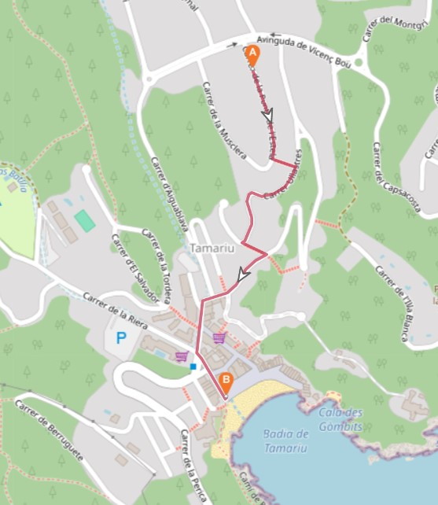

Hoe Te Bereiken → Naar het Strand
Naar het Strand
Het strand ligt op slechts 750 meter van het huis — een korte, makkelijke wandeling naar beneden door de rustige woonstraten van het dorp. Onderweg zijn er enkele trappen en te voet duurt het maar een paar minuten.

In het Kort
- Afstand: ongeveer 750 meter vanaf het huis
- Te voet: slechts een paar minuten, grotendeels bergafwaarts
- Route: rustige woonstraten met enkele trappen
Routebeschrijving naar het Strand
- Ga bij het verlaten van het huis linksaf en loop tot het einde van de straat.
- Net voorbij nummer 19 vindt u een trap. Ga deze af en sla onderaan rechtsaf.
- Volg de weg en daarna een steil stuk naar beneden. Waar de weg naar rechts buigt, ligt links nog een trap.
- Ga deze trap af en sla onderaan rechtsaf. Na ongeveer 20 meter komt u bij een trap die omhoog naar het hoger gelegen deel van het dorp leidt.
- Volg de weg die naar links buigt — de grotere Spar-supermarkt ligt dan recht voor u, aan de overkant van de hoofdweg.
- Neem vanaf hier een willekeurige straat naar links; die brengt u naar het strand.